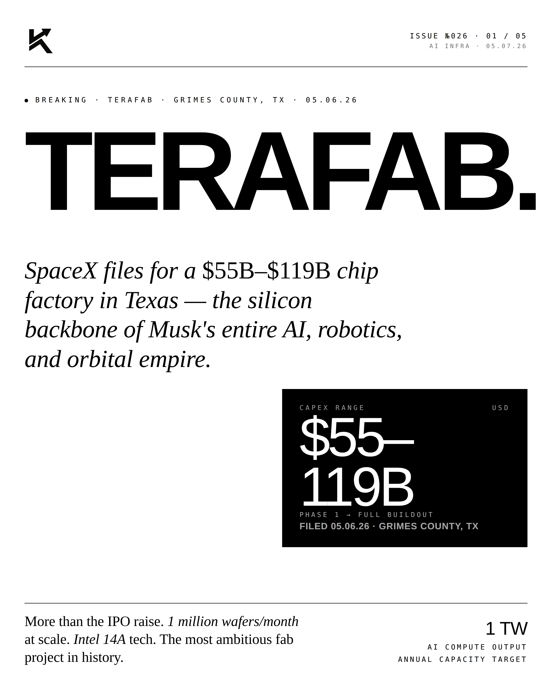
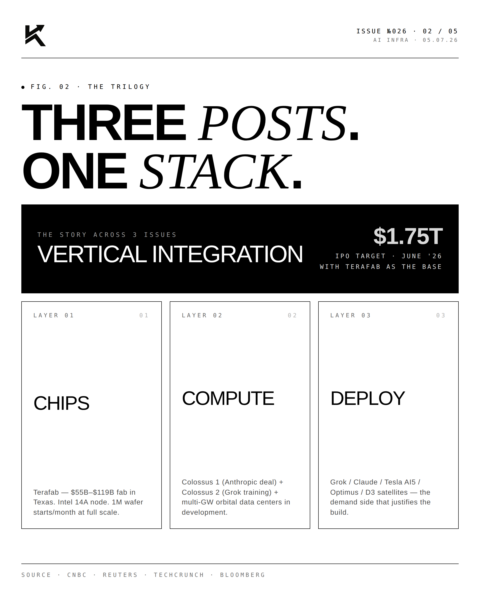
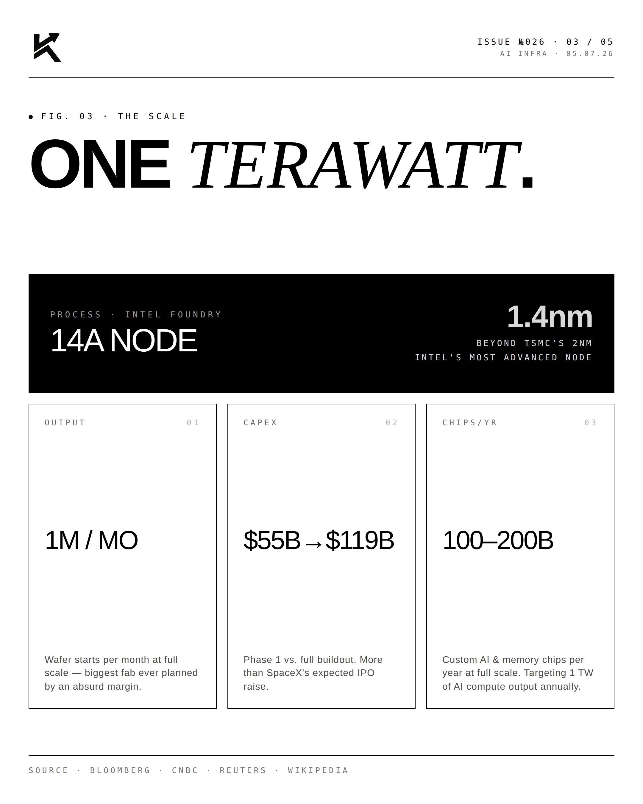
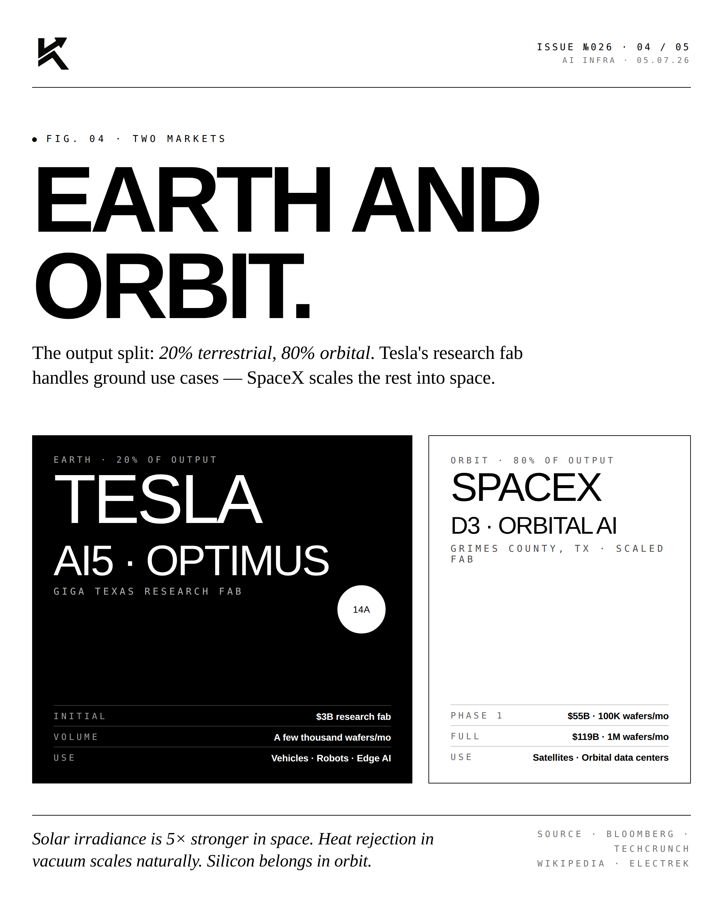
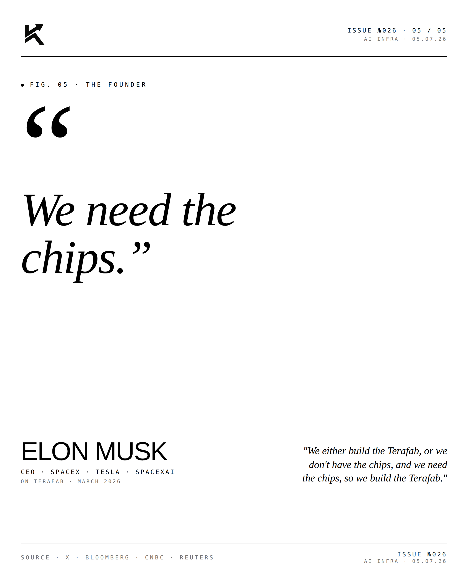

Terafab.
America needs to build its own chip fabs — and not just one. Terafab is the new breed of U.S. semiconductor manufacturer betting on scale, geography, and sovereign demand.

The Trilogy.
Three categories of American chip capacity matter most: leading-edge logic (TSMC Arizona, Intel Ohio), trailing-edge memory (Micron, CXMT in China is the counterweight), and specialized analog/RF. Terafab targets the underserved middle — chips needed by defense and frontier-tech companies that don't want to depend on Taiwan or South Korea.

The Scale.
Building a competitive chip fab costs $10-20B. Operating one requires deep technical talent and decade-long capital commitments. The CHIPS Act provided the federal subsidy framework. Sovereign-aligned private capital is providing the rest. Terafab is one of a handful of new U.S. fabs targeting this construction.

The Markets.
The demand side is structural. Anduril, Hadrian, Vulcan, SpaceX, defense primes — every Reindustrialize America company needs chips. Right now most of those chips come from Taiwan. The thesis is that within five years, a meaningful share will come from new U.S. fabs.
"The fabs
are the moat."EDITORIALOn U.S. Chip Manufacturing · 2026
"Software is infinitely replicable. Chips are not. The country that controls leading-edge chip manufacturing controls the future of every technology that depends on them — which is to say, all of them."


Software was the moat for thirty years. Silicon is the moat now.
Disclosure
Personal commentary and editorial analysis. Not investment advice, not an offer or solicitation.